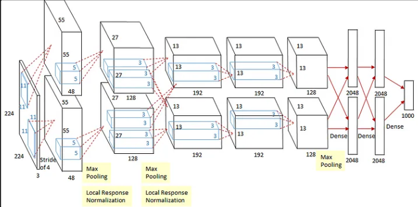
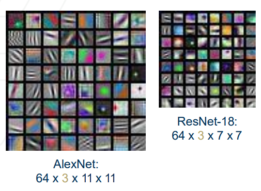
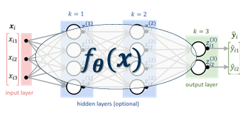
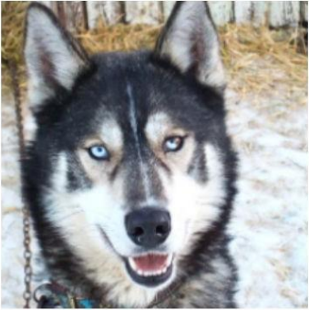
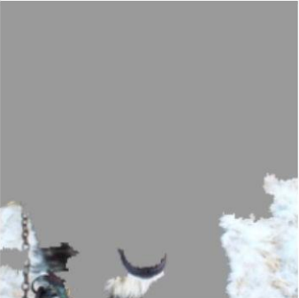
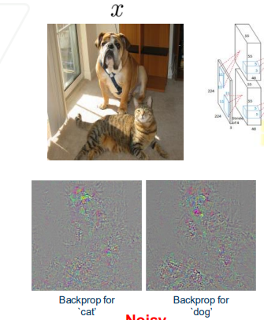
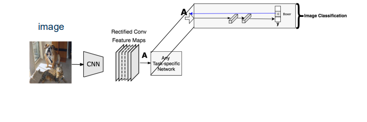
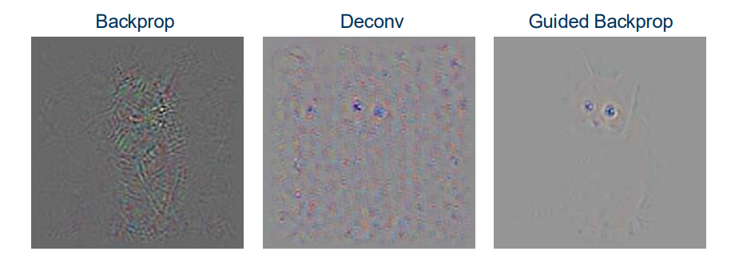

Contributors: Dr. Ahmad Mustafa, Dr. Motaz Alfarraj, Dr. Ashraf Alattar, Dr. Chen Zhou
Teaching Assistants with remarkable contributions include: Kuo-Wei Lai, Wuyang Du, Shiva Mahato, Michael Zhou, Ninghan Zhong
Disclaimer: All content of these notes are part of this course at Georgia Tech. Any re-use or distribution is not permitted without pre-approved permission. All these notes belong to, created by, and copyrighted for Ghassan AlRegib and Mohit Prabhushankar, Georgia Tech, 2021–2028.
The objective of this lecture is to explore the concept of explainability in machine learning and its application to neural networks. They cover key methods and paradigms such as Grad-CAM, saliency maps, and counterfactual explanations, as well as the evaluation of these techniques through human-centered and application-based approaches. The lectures aim to provide a comprehensive understanding of how explainability enhances trust, transparency, and usability in machine learning models across various real-world domains.
1.2 Recap
In the previous lecture, we dived into explainability in machine learning, particularly within neural networks, covering methods like Grad-CAM and saliency maps, and evaluating these techniques through both human-centered and application-based approaches to enhance understanding and trust in ML models.
1.3 Explainability
1.3.1 Definition
The ability of an entity to explain or justify its decisions or predictions in human-understandable terms
1.3.2 Why do we choose explainability
Explainability in deep learning systems is crucial for establishing trust by developing transparent models that can clearly explain their predictions to humans. It is particularly valuable in fields such as medicine, where it aids doctors in diagnosis; in seismic interpretation, helping label seismic data accurately; and in autonomous systems, where it builds trust and confidence by making the operations of complex algorithms understandable. These models process input data and output class scores without being able to articulate their decision-making process, which is why explainability is so important.
1.3.3 Explainability in CNNs
A brief look to AlexNet
Different layers in a CNN
AlexNet contains eight layers:
Input: 227×227×3 input images (224×224×3 sizes is mentioned in the paper and also in the figure, however, it is later pointed out that it should be 227, or 224×224×3 is padded during the 1st convolution.)
1st: Convolutional Layer: 2 groups of 48 kernels, size 11×11×3 (stride: 4, pad: 0) outputs 55×55 ×48 feature maps ×2 groups. Then 3×3 Overlapping Max Pooling (stride: 2) outputs 27×27 ×48 feature maps ×2 groups. Then Local Response Normalization outputs 27×27 ×48 feature maps ×2 groups.
2nd: Convolutional Layer: 2 groups of 128 kernels of size 5×5×48 (stride: 1, pad: 2) outputs 27×27 ×128 feature maps ×2 groups. Then 3×3 Overlapping Max Pooling (stride: 2) outputs 13×13 ×128 feature maps ×2 groups. Then Local Response Normalization outputs 13×13 ×128 feature maps ×2 groups.
3rd: Convolutional Layer: 2 groups of 192 kernels of size 3×3×256 (stride: 1, pad: 1) Outputs 13×13 ×192 feature maps ×2 groups
4th: Convolutional Layer: 2 groups of 192 kernels of size 3×3×192 (stride: 1, pad: 1) Outputs 13×13 ×192 feature maps ×2 groups
5th: Convolutional Layer: 256 kernels of size 3×3×192 (stride: 1, pad: 1) Outputs 13×13 ×128 feature maps ×2 groups Then 3×3 Overlapping Max Pooling (stride: 2) Outputs 6×6 ×128 feature maps ×2 groups
6th: Fully Connected (Dense) Layer of 4096 neurons
7th: Fully Connected (Dense) Layer of 4096 neurons
8th: Fully Connected (Dense) Layer of Outputs 1000 neurons (since there are 1000 classes) Softmax is used for calculating the loss.
In total, there are 60 million parameters need to be trained !!!
Visualizing CNNs
In CNNs, filters can be equated to weights. These filters are responsible for capturing specific features from the input images, and filters always extend the full depth of the input volume. Each filter in the first layer is visualized as being capable of detecting low-level features such as oriented edges, color blobs, textures, and other background elements in the input image.
Visualizing Filters in First Layers
AlexNet
The sequence of convolutional layers of AlexNet
64 filters in the first convolutional layer
Filter size: 11 x 11 x 3 (visualize as RGB images)
Filters are looking for low-level oriented edges, color blobs, textures, background etc.
ResNet
The sequence of convolutional layers of ResNet
The deeper and more complex connectivity patterns such as identity shortcuts and convolutional blocks that help in training deeper networks without suffering from vanishing gradients
Filter size: 7 x 7 x 3 (visualize as RGB images)
64 filters in the first convolutional layer
Summary
• Filters in the first convolutional layers across different architectures learn similar patterns
Outputs of AlexNet and ResNet
Visualizing Filters in Intermediate Layers
Filters in higher convolutional layers are not as interpretable as filters in the first layer.
Layer-specific Details
Layer-specific Outputs
Initial layers (like Conv1) display interpretable weights visualized as RGB images, capturing basic features like edges and textures.
Higher layers (such as Conv2 and Conv3) have weights visualized as grayscale images, suggesting complexity and less interpretability in raw form.
Activation Specificity in Conv5 Layer
The fifth convolutional layer (Conv5) in networks like AlexNet is particularly sensitive to specific features such as wheels, illustrating how higher layers focus on more refined aspects of the input.
This sensitivity is shown through an activation map that highlights where in the image the filter is most activated, such as the wheel of a car in the example provided.
Conv5 of AlexNet
Maximally Activating Patches
Apart from visualizing the intermediate activations, we can also visualize what similar visual patterns in images that cause the maximum activations of certain neurons. It defined as image patches in the input that trigger the highest activations for specific filters within the network, revealing what features each filter is most responsive to.
Procedure for Obtaining Maximally Activating Patches
Select activations from a specific layer and channel within that layer, such as picking channel 17 out of 128 in the conv5 layer.
Process numerous images through the network, recording activation values for the selected channel.
Visualize the image patches that correspond to these peak activations to identify which features activate the filter most strongly.
Characteristics of Maximally Activating Patches
These patches tend to display similar visual patterns or features that are consistently detected by the same neuron, illustrating the neuron’s specific role and preference in feature recognition.
The images that we shown in class show that each row, corresponding to a particular neuron in conv5, groups patches with similar characteristics, such as faces, text, or specific object parts, indicating the diverse and specialized nature of higher layer neurons in CNNs.
Visualizing Last Layer Activations
The last layer activations of a CNN are 4096-dimensional feature vectors derived just before the final classifier. These embeddings represent the entire input image rather than specific patches and are crucial for understanding the high-level features the network deems significant for classification.
Purpose of Last Layer Visualizations
Grouping by Similarity::Images that produce similar last layer activations can be grouped together. This similarity suggests that the network perceives them as having common class-specific features, aiding in tasks like image retrieval or clustering based on content similarity.
Exploring Activations:: By analyzing the activations, we can see how different inputs activate the network similarly, indicating what features or patterns are considered similar by the CNN.
Operational Methodology
Feeding and Collecting Data::Numerous images are fed through the network to collect these final layer feature vectors.
Visualization Approach:: The visualization of these activations involves grouping and displaying images that have similar last layer embeddings, which demonstrates the network’s interpretive logic on a macro scale.
Visualizing Last Layer Activations via Dimensionality Reduction
Last Layer Embedding
The last layer embedding as a 4096-dimensional feature vector for each image, extracted just before the final classification layer in a CNN. This high-dimensional vector encapsulates the essential features identified by the network for making predictions.
Dimensionality Reduction for Visualization
To make the high-dimensional data interpretable, dimensionality reduction techniques are employed. These include Principal Component Analysis (PCA), Isomap, Uniform Manifold Approximation and Projection (UMAP), and t-Distributed Stochastic Neighbor Embedding (t-SNE).
The purpose of these techniques is to reduce the dimensionality from 4096 to 2 or 3 dimensions, enabling the visualization of the feature space where each two-dimensional point corresponds to an image.
Visualizing Feature Space
By applying dimensionality reduction, the feature vectors are transformed into a 2D or 3D space that can be visually explored.
Application Example with t-SNE
t-SNE, in particular, is highlighted for its effectiveness in preserving local relationships between data points while reducing dimensionality. This results in a clustered visualization where similar images form distinct groups, aiding in the intuitive understanding of the data’s structure and the model’s behavior.
t-SNE visualization of MNIST
Summary of Visualizing CNNs
Maximally Activating Patches
These are portions of input images that activate certain filters the most. This visualization helps identify what features in the input images are most significant for the filters.
Nearest Neighbor Images in Feature Space
By examining images that are closest in the feature space of a neural network, we can understand how the network groups similar images based on learned features.
Last Layer Embeddings
Visualizing the output of the last layer of the network can demonstrate how different inputs are positioned relative to each other in the learned feature space, which is useful for tasks like image clustering and anomaly detection.
Saliency Methods
The saliency methods using occlusion aim to identify important regions in images that impact a model’s prediction by masking parts of the image and observing the change in output probabilities. It is also a very expensive approach, especially for high-resolution input images.
Saliency via Occlusion
Visualizing Decrease in Probabilities: Heatmaps are generated to show how blocking certain pixels affects the prediction probabilities. For example, blocking key regions in an image of an elephant significantly reduces the model’s confidence in predicting it as an elephant.
Network Sensitivity: The approach highlights the network’s sensitivity to specific visual regions that are crucial for making accurate classifications. This indicates that the neural network is not only looking at the overall image but focusing on particular features relevant to the class label.
Expensive Computation: Creating these heatmaps is computationally expensive, particularly with high-resolution images, due to the large number of pixels that need to be individually tested to see their effect on the output.
Faithfulness of the Method: The method is considered faithful in how it represents the influence of different image regions on the decision-making process of the neural network. It provides a clear visual explanation of which parts of an image are most important for the network’s predictions.
Recall feature importance in logistic regression: \[P(y = 1|x) = \sigma(\mathbf{w}^T x + b), P(y = 0|x) = 1 - \sigma(\mathbf{w}^T x + b)\]Explanation:
\(\sigma\): Sigmoid function, mapping the weighted input \(\mathbf{w}^T x + b\)
\(\mathbf{w}^T x\):
\(b\):
Each weight \(w_i\) represents the importance of feature \(x_i\), indicating how much \(x_i\) contributes to the prediction.
Demonstration
Saliency via Gradients
Generate pixel saliency maps by deep models as feature importance maps.
\(\phi\): Activation functions (e.g., ReLU or sigmoid), introducing non-linearity.
\(w^{(i)},b^{(i)}\): Weights and biases at layer iii, capturing layer-specific transformations.
This function models complex dependencies between inputs \(x\) and output \(\hat{y}\).
Linearization Using Taylor Series:
\[\hat{y} \approx x(W^T) + o(b(T))\]Explanation:
Approximates the non-linear function with a linear model around a specific point using first-order derivatives.
\(\nabla_y \hat{y} \approx \frac{\partial \hat{y}}{\partial x}\): Gradients of the output with respect to the input, indicating sensitivity of the prediction to each input feature.
Gradients can be computed efficiently via backpropagation, making it feasible for high-dimensional inputs.
Highly non-linear mapping function
Saliency via Gradients (Illustration)
Gradients highlight regions in the input image that most influence the prediction.
These saliency maps visually represent which pixels are critical for identifying the dog in the image.
Forward Pass
Compute probabilities for each class using the neural network.
The class “Dog" is selected as it has the highest probability.
Forward Pass
Backward Pass
Compute the gradient of the unnormalized class score \(\hat{y}\) with respect to the image pixels: \(\frac{\partial \hat{y}}{\partial x}\)
Visualize the maximum absolute values of the gradient across RGB channels to create the saliency map.
Saliency Map
Highlights regions in the input image that strongly influence the class score, showing areas most critical for the network’s decision.
Saliency via Gradients (Examples)
Visualization:
Saliency maps are generated via backpropagation, highlighting important features for various input images (e.g., a boat, a dog, a fruit, or a landscape).
Saliency Methods: Weakly-Supervised Segmentation
Application:
Saliency maps can be used to assist in unsupervised semantic segmentation.
Gradients with respect to pixels help identify meaningful regions in images.
Visualization:
Segmentations illustrate the network’s focus on different objects within an image (e.g., animals, objects, or regions of interest).
Examples of weakly-supervised segmentation using saliency maps.
Uncovering Biases
Saliency maps can reveal biases in models.
Example:
When snow is present in most wolf images, the network uses snow pixels as salient regions for prediction.
A wolf vs. dog classifier may actually function as a snow vs. no-snow classifier.
Visualization:
Image (a): Husky classified as a wolf.
Image (b): Saliency map showing snow pixels as influential features.
Image (a): Husky classified as a wolf.
Image (b): Saliency map showing snow pixels as influential features.
Gradient-Based Explanations
Gradient-based explanations provide insights into neural network decisions by identifying which parts of the input image are most influential for the output prediction. These explanations utilize gradients computed during the backpropagation process to generate saliency maps, which visually highlight critical regions of the input. While they are computationally efficient and help approximate feature importance, these methods may not always reflect the actual decision-making process of the model effectively. Additionally, they can sometimes lack class discriminativity, meaning they may not clearly distinguish between different classes based on the highlighted features.
Vanilla Backpropagation
Vanilla Backpropagation is used to generate saliency maps in neural networks. These maps can be noisy, which complicates the identification of critical regions that influence model predictions. To address this, it’s common to modify or rectify the backpropagation process to produce clearer visualizations. Specifically, during the backward pass, gradients are computed only for regions of positive activations due to the use of ReLU non-linearities, which ignore negative values and propagate gradients only through positive activations. This selective propagation helps clarify which features are most relevant to the model’s decisions.
Deconvnet Backpropagation
For ReLU non-linearities:
Gradients are propagated only to regions of positive activations in the previous layer.
This combines positive activations and gradients, resulting in better saliency visualizations.
1.3.5.2 Visualization
Produces even cleaner saliency maps compared to Deconvnet.
1.3.6 Vanilla vs. Deconvnet vs. Guided Backpropagation
Observation: Guided backpropagation produces the “cleanest” saliency maps.
Comparison:
Backprop: Produces noisy saliency maps.
Deconvnet: Cleaner maps with positive gradient propagation.
Guided Backprop: Cleanest maps by combining rectifications from both forward and backward passes.
1.3.7 Problems with Guided Backpropagation
Issue 1: Not very class-discriminative.
Example:
GB for “airliner”: Saliency map includes features irrelevant to the “airliner” class.
GB for “bus”: Similar features are highlighted as in the “airliner” case.
Observation: Saliency maps are less related to the neural network’s decision-making process.
Issue 2: Noise and lack of clarity in class-specific saliency.
Backprop for “cat” and “dog”: Produces noisy saliency maps, highlighting irrelevant regions.
Guided Backprop for “cat” and “dog”: Fails to differentiate clearly between the two classes. Results in saliency maps that are not class-discriminative.
Example of backdrop
1.3.8 Summary of Saliency Maps
1.3.8.1 Intervention-Based Methods
Perturbing pixels and observing decision changes.
Drawbacks:
Computationally expensive.
Requires iterative perturbations.
Gradient-Based Methods
Approximates feature importance via backpropagation.
Advantages:
Computationally efficient.
1.4 Gradient-Based Class Activation Map (Grad-CAM)
1.4.1 Motivation
Objective: Identify the important activations responsible for a specific class.
Requirements for Activations:
Class-Discriminative: Reflect the network’s decision-making process.
Preserve Spatial Information: Ensure the spatial coverage of important regions.
Layer Selection for Perturbation:
Higher layers capture class-specific information.
Fully-connected layers lose spatial information.
The last convolutional layer strikes a balance: combines high-level semantics with detailed spatial resolution.
1.4.2 Method
Feedforward:
Input an image into the CNN.
Extract feature maps from the last convolutional layer for task-specific layers (e.g., fully connected layer for classification).
CNN Architecture for Image Classification with Task-Specific Network
Perturb Neuron Activations:
Modify neuron activations in the last convolutional layer.
Observe how these changes affect the network’s decision-making.
Backward Pass:
Perform gradient-based backpropagation for a specific class.
Use gradients to identify important activations contributing to the class prediction.
Grad-CAM uses the gradient information flowing into the last convolutional layer to assign importance values to each activation for a particular decision of interest.
Examples:
Torch, Taxi, Car Mirror: Guided Backprop shows complex outlines but fails to focus on discriminative features.
Ice Cream: Grad-CAM correctly highlights the ice cream cone as the primary feature.
Gradient-based Class Activation Map
1.4.3 Case Studies
Bathroom Scene:
Guided Backpropagation: Highlights irrelevant details like sink outlines.
Grad-CAM: Focuses on key regions such as the toilet and sink area.
Field Scene with a Horse:
Guided Backpropagation: Overly noisy with low specificity.
Grad-CAM: Highlights the horse and relevant parts of the field, supporting the prediction.
1.5 Types of Explanations:
1.5.1 Indirect Explanations:
Analyze and present internal network parameters or features, necessitating deeper understanding from the user.
1.5.2 Direct Explanations:
Identify and highlight critical regions or features in input data that significantly influence the model’s output.
1.5.3 Targeted Explanations:
Focus on explaining specific decisions by highlighting relevant features and their influences on the model’s output.
1.6 Network Evaluation
Masking Techniques
Common evaluation technique includes using explanation heatmaps or pixel-wise importance to check prediction correctness.
Masking using explanation heatmap and pixel-wise masking using explanation importance are demonstrated.
1.6.1 Explanatory Evaluation
Progressive Pixel-wise Insertion and Deletion:
Pixel-wise Deletion: Sequentially delete pixels based on their explanation assigned importance scores to observe changes in model decisions.
Pixel-wise Insertion: Add pixels in order of importance and monitor how each addition affects the model’s decisions.
1.7 Visual Aids
Purpose and Implementation:
The lecture incorporates a variety of visual aids, including feature importance maps and layer activations. These images are instrumental in demonstrating how different explanation techniques can elucidate the internal workings of models.Feature Importance Mapsvisually represent the weight or significance of each input feature in the context of the model’s decision-making process, offering intuitive insights into which features are most influential. Layer Activations provide a deeper look into the neural network’s layers, showing how each layer processes input data and contributes to the final output, thus helping in the understanding of the model’s complexity and functionality.
1.8 Targeted Explanations
Types of Saliency Maps for Dog Image Classification
1.8.1 Contrast-CAM and Counterfactual-CAM
Contrast-CAM: Focuses on providing visual comparisons between different classes, highlighting the distinct features that lead to one classification over another. This technique is particularly useful in scenarios where fine-grained differentiation between classes is crucial.
Counterfactual-CAM: Illustrates potential changes in the activation maps if the classification target were to change. This helps in understanding the model’s dependency on specific features and how altering these features could shift the model’s output, thereby providing insights into the model’s sensitivity and adaptability.
Formulas for Class Activation Maps
Weight Calculation for Class Activation Maps:\[\alpha_k^c = \frac{1}{Z} \sum_i \sum_j \frac{\partial y^c}{\partial A_{ij}^k}\] This formula calculates weights \(\alpha_k^c\) for each channel by averaging the gradients from the output for class \(c\) back to the activation maps \(A^k\), highlighting the pixels’ impact on the class prediction.
ReLU Combination for Visualizing Important Regions:\[L_{\text{Grad-CAM}}^c = \text{ReLU} \left( \sum_k \alpha_k^c A^k \right)\] This formula generates a visualization map \(L_{\text{Grad-CAM}}^c\) by applying ReLU to the weighted sum of feature maps \(A^k\), isolating areas positively affecting the class outcome.
1.9 Key Questions in Explainability
Types of Questions Explored:
Correlational (Why P?): This question probes into which specific features in the dataset lead to particular predictions, aiming to establish direct links between input features and model outputs.
Counterfactual (What if?): Explores hypothetical scenarios where input data is modified, aiming to predict how these changes would affect the outcomes, thus testing the model’s robustness and flexibility.
Contrastive (Why P, rather than Q?): Seeks to understand the rationale behind choosing one classification over another, providing clarity on the decision-making criteria and the model’s discriminative capabilities.
1.10 Overview of Explainability Techniques
Visualization Techniques:
Utilizing Grad-CAM (Gradient-weighted Class Activation Mapping), this section showcases how different regions of the input image influence the neural network’s output layer. Grad-CAM provides a heatmap visualization that identifies the most influential parts of the input image for predicting a specific class.
Examples include specific case studies where Grad-CAM has been applied to various models, highlighting significant regions that contribute to classifications, thereby enhancing the interpretability and transparency of complex models.
1.11 Explanatory Evaluation
1.11.1 Evaluation Metrics:
Human Interpretability: Assesses whether the explanations provided by the model are understandable to laypersons, facilitating broader comprehension and acceptance of machine learning decisions.
Model Transparency: Examines whether the explanations shed light on the model’s internal decision-making processes, crucial for validating and trusting AI systems.
Operational Usability: Evaluates if the explanations can be leveraged to enhance model performance or aid in debugging, thereby serving as a practical tool in model development and refinement.
1.12 Network Evaluation
1.12.1 Purpose and Methodology:
This section evaluates how different explanation techniques influence the performance and behavior of neural networks without direct human intervention.
Explanation Masking: Common techniques include masking parts of the input image using generated explanation heatmaps or assigning pixel-wise importance to verify the prediction’s accuracy. This helps in understanding which parts of the input are most critical to the network’s decision-making process.
1.12.2 Application Evaluation
Human-Centric Evaluation Tasks:
Focuses on incorporating human judgment into the evaluation loop, even without direct quantitative measures of explainability.
Gaze Tracking and Pointing Games: These techniques assess how well explanations capture human attention and whether they align with intuitive visual processing. Gaze tracking observes where a person looks when trying to understand an explanation, while pointing games involve users indicating which parts of an explanation are most informative.
Saliency Map Visualization
1.12.3 Human Evaluation
Direct Human Interaction:
Involves directly engaging individuals to evaluate the clarity and utility of explanations provided by AI systems.
Comparative Methods: Techniques such as Backpropagation, Deconvolution, and Guided Backprop are employed and compared to determine which method yields explanations that are most intuitive and helpful for end-users in understanding AI decisions.
Human Evaluation
1.13 Network Evaluation via Masking
Masking Techniques in Depth:
Explores how masking the image with explanation heatmaps or using pixel-wise importance evaluates the model’s dependency on certain image regions for accurate predictions.
Two Types of Masking:
Heatmap Masking: Uses the entire explanation heatmap to obscure parts of the image.
Pixel-wise Importance Masking: Masks the image based on the importance of each pixel, observing how each pixel’s presence or absence affects the model’s output.
1.14 Explanatory Evaluation
Progressive Pixel-wise Insertion and Deletion:
Pixel-wise Deletion: This process involves systematically removing pixels from the input based on their importance scores, which are typically derived from the model’s sensitivity to each pixel’s contribution. By observing how the removal of these pixels affects the model’s decision-making, researchers can gain insights into which features are most critical for the model’s accuracy and functionality.
Pixel-wise Insertion: In contrast to deletion, this method involves gradually adding pixels back into a blank or neutral input image in order of their importance. This technique helps in understanding how each pixel’s addition influences the model’s output, thereby assessing the sufficiency of the accumulated features for making accurate predictions. This approach is particularly useful for verifying the model’s behavior in reconstructing the decision-making process from minimal data.
1.14.1 Additional Insights
Effectiveness of Masking Strategies:
Impact of Pixel Manipulation: This section demonstrates the significant impact that the strategic removal or addition of pixels has on the model’s decision process. By altering which pixels are visible to the model, researchers can directly test the robustness of the model and its dependency on specific image features for classification or prediction tasks.
Visual Examples and Case Studies: Utilizing real-world examples such as the Crane and Spoonbill images, this part illustrates how different masking strategies alter the model’s predictions. These examples show how changes in the visibility of certain features in the images can lead to different outcomes, thereby highlighting the interpretative power of pixel-wise analysis in understanding model behavior. The use of such case studies makes it easier to communicate complex concepts and validate the practical applications of explanation techniques in various scenarios.